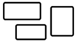
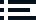
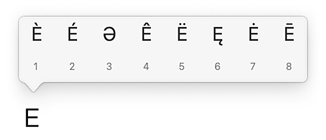

| TASTIERA | APPLICAZIONI | Python, Fastboot/ADB |
| SCORCIATOIE | IMPOSTAZIONI | BACKUP |
| App | CARATTERI | INSTALLAZIONE DI MACOS |
| Note | PERCORSI | MODALITÀ DI AVVIO |
| MENU ESTESI | TERMINALE | DNS |
Risorse utili
\\ Risoluzioni, schermi, standard video, dispositivi
\\ Liste di filtri per sicurezza, privacy e blocco pubblicità
| Simbolo | Tasto | Simbolo | Tasto |
|---|---|---|---|
| ⌘ | Command | ␣ | Spazio |
| ⌥ | Opzione / Alt | ⇥ | Tab |
| ⇧ | Maiuscolo | ←↑↓→ | Frecce direzionali |
| ⌃ | Control | ⇞⇟ | Pagina su / giù |
| ↵ ⌅ | Invio | ↖↘ | Inizio / Fine |
| ⌫ | Backspace | ⌽ | Power |
| ⌦ | Canc | ⏏ | Eject |
| ⎋ | Esc | Fn | Globo (Funzione) |
| Tasti | Effetto | Tasti | Effetto |
|---|---|---|---|
↑ | se il cursore è sulla prima riga di un documento, lo sposta all'inizio | ↓ | se il cursore è sull'ultima riga di un documento, lo sposta alla fine |
⌥← | sposta il cursore all'inizio della parola corrente, poi all'inizio di ogni parola precedente | ⌥→ | sposta il cursore alla fine della parola corrente, poi alla fine di ogni parola successiva |
⌘← | sposta il cursore a inizio riga | ⌘→ | sposta il cursore a fine riga |
⌥↑ | sposta il cursore all'inizio del paragrafo corrente, poi all'inizio di ogni paragrafo precedente | ⌥↓ | sposta il cursore alla fine del paragrafo corrente, poi alla fine di ogni paragrafo successivo |
⇞Fn↑ | sposta il cursore alla pagina precedente o sposta la vista verso l'alto di una schermata | ⇟Fn↓ | sposta il cursore alla pagina successiva o sposta la vista verso il basso di una schermata |
↖⌘↑ Fn← | sposta il cursore all'inizio del documento | ↘⌘↓ Fn→ | sposta il cursore alla fine del documento |
⌫ | cancella un carattere all'indietro | ⌦Fn⌫ | cancella un carattere in avanti |
⌥⌫ | cancella una parola all'indietro | ⌥⌦Fn⌥⌫ | cancella una parola in avanti |
⌘⌫ | cancella tutto il testo fino all'inizio della riga | ⌘⌦Fn⌘⌫ | cancella tutto il testo fino alla fine della riga |
| Combinazione | Effetto |
|---|---|
⌥ + trascinamento selezione | seleziona il testo solo nell'area definita, ignorando il resto |
| Tasti | Effetto |
|---|---|
Fn+[tasti Mac]F1, F2 … F12 | Tasti funzione da F1 a F12 (l'effetto varia a seconda dell'applicazione) |
⇧ + scorrimento⇧⌘Q⌃⇧⌽ ⌃⇧⏏ 1⌘⌥⌽ ⌘⌥⏏⌃⌘Q⌃⌘⌽ ⌃⌘⏏⌃⌘⌥⌽ ⌃⌘⌥⏏⌘⌥⎋⌘⌥⇧⎋⌃F2⌘W⌘H / ⌥ + Clic sull'icona del Dock⌘⌥H⇧⌘H 13⌘⌥HM⌘Q⌘⌥Q⌘,⌘⎋ 13⌥``⌥ (doppia pressione veloce) 2Fn F⌥ + tasto multimediale⌘ +  (Tasto Mission Control su F3)⌥⇥⌃⏎⇧⌘C 13⌃⌥⌘⎋ Esci dalla modalità pulizia: ⌘x6 13⌘⇥ ⇧⌘⇥ (sistema)⌘⇥ ⌘\ (con AltTab)⌃⇥ 13⌘): ⌥ poi rilasciare⌘): Q⌘): 1⌘C ⌘X ⌘V⌘B⌘I⌘U⌘A ⌘⌥A⌃⌘␣ Fn E Fn8 ): ⌥␣⌥ + clic e trascinamentoFn⌃←Fn⌃→Fn⌃↑Fn⌃↓Fn⌃⇧←Fn⌃⇧→Fn⌃⇧↑Fn⌃⇧↓⌘␣⌥ 4 (tenere premuto)⌘ (tenere premuto)⇧ Vol↑ ⇧ Vol↓⌥⇧ Vol↑ ⌥⇧ Vol↓⌥⇧ Lum↑ ⌥⇧ Lum↓⌃⌥⌥⌘0 ⌥⌘-⌃ + Mouse ↑↓⌃⌥⌘⇧3 (appunti: ⌃⌘⇧3)⌘⇧4 (appunti: ⌃⌘⇧4)⌘⇧4 + ␣ (appunti: ⌃⌘⇧4␣)⌘⇧4 + ⌥␣⌘⇧6 (appunti: ⌃⌘⇧6)⌘⇧5␣⌥␣⌥⌘ + trascinamento⌥ + clic su ⌘' 13⌘C ⌘V⌘C ⌥⌘V⌘D⌘A ⌘⌥A⌥⇧I 13⌘⌫⇧⌘⌫⌘↓⌃↵⌘↑⌘Ò ⌘À / ⌘⇧← ⌘⇧→ 3↖ ↘ / Fn← Fn→⇞ ⇟ / Fn↑ Fn↓⌥↑ ⌥↓⌘⌥C⌘K⌘⇧G / ⌘G 3⌘⇧H⌘N / ⇧ + clic sull'icona del Dock 13⌘⇧N⌃⌘N⌘< / ⌘⎋ 3 / ⌥⇥ 3, 10⌘W ⌘⌥W⌘M ⌘⌥M⌘⇧. (desktop) Fn⌘⇧. (portatili)⌘⇧P⌃⌘S⌘\ 3⌥ + Clic su ▸⌘ + Clic e trascinamento⌘ + Clic e trascinamento⌘⌥- 5 / ⌥N 13⌘1 ⌘2 ⌘3 ⌘4⌘+ ⌘-⌘E⌃⌥- 6⌘Q 13⌘V 3⌃C␣0 [NumPad] \⌘M *⌃⌘M *⌘W *. ,<⇧<⇞ ⇟ / ⌘← ⌘→⇧ + trascinamento+ - *ÈÀ Ù *⌘À ⌘Ù *B N⌘⇧XAlt + clic e trascinamento dal bordo della barra del livello⌘⇧DÌ * [NumPad] *⌘⇧C'* Scorciatoie personalizzate tramite il profilo di scelte rapide Roccobot
⌘Y⌘7I⌥ + spostamento slider di regolazione⇧ + doppio clic sul cursore dello slider⌃⌥→ ⌃⌥←⌃⌥↑ ⌃⌥↓⌥⌫⌘⌫⇧⌫⌘⌥G⌘J⇧⌘J⌃⌘F⌥ + clic su ⌥ + clic su ⌥ + clic (durante la trasformazione di un livello)⌘ + spostamento dei punti di controllo⌥ + spostamento slider di regolazione 'doppio' ⌘⌥⇧E (mentre è selezionato il primo livello in alto)⌥ + trascinamento dell'asset sull'area di lavoro⌥ + clic sulla miniatura o sul nome del livello⌫H + clic, trascinamento, rilascio⌥ + clic su 'Annulla'⌃⌘⌥ + trascinamento␣ + trascinamento⌘⌥2⌘⇧A| Funzione o strumento | Scorciatoia |
|---|---|
| File → Esporta → Esporta come... * | ⌘⇧E |
| File → Esporta → Esportazione rapida come [...] * | ⌃⌘E |
| Modifica → Incolla speciale → Incolla nella stessa posizione | ⇧⌘V |
| Modifica → Riempi | ⌘ò |
| Modifica → Riempimento in base al contenuto | ⌘K |
| Modifica → Riempimento generativo | ⌘⇧K |
| Modifica → Scala in base al contenuto | ⌃⌘K |
| Modifica → Svuota memoria → Tutto | ⌃⌘P |
| Modifica → Converti in profilo | ⌘⌥C |
| Immagine → Ritaglia | ⌘\ |
| Immagine → Dimensione immagine | ⌘ì |
| Immagine → Dimensione quadro | ⌘⇧ì |
| Immagine → Regolazioni → Valori tonali | ⌘⇧L |
| Immagine → Regolazioni → Tono automatico | ⌘⌥⇧1 |
| Immagine → Regolazioni → Contrasto automatico | ⌃⌘⌥1 |
| Immagine → Regolazioni → Colore automatico | ⌘⇧1 |
| Immagine → Mostra tutto | ⌃⌘⌥0 |
| Livello → Esporta come... * | ⌘⌥' |
| Livello → Esportazione rapida come [...] * | ⌃⌘' |
| Livello → Nuovo livello di riempimento → Tinta unita | ⌘⇧ò |
| Livello → Nuovo → Sfondo da livello / Livello da sfondo | ⌘⇧\ |
| Livello → Nuovo → livello | ⌘L |
| Livello → Unico livello | ⌘ù |
| Livello → Unisci visibili * | ⌘⇧ù |
| Livello → Rinomina livello | ⌘R |
| Livello → Rasterizza → livello | ⌘⇧R |
| Livello → Blocca / sblocca livelli | ⌘⇧B |
| Livello → Collega / scollega livelli | ⌘⇧0 |
| Livello → Maschera di livello → Mostra tutto | ⌃⌘T |
| Livello → Maschera di livello → Nascondi tutto | ⌃⌘Y |
| Livello → Maschera di livello → Mostra selezione | ⌃⌘S |
| Livello → Maschera di livello → Nascondi selezione | ⌃⌥⌘N |
| Livello → Maschera di livello → Elimina | ⌃⌘0 |
| Livello → Maschera di livello → Applica | ⌃⌘1 |
| Livello → Maschera di livello → Attiva / disattiva | ⌃⌘\ |
| Livello → Maschera di livello → Collega / scollega | ⌃⌘Ì |
| Livello → Crea / rilascia maschera di ritaglio | ⌃⌘R |
| Livello → Oggetti avanzati → Converti in oggetto avanzato | ⌃⌘O |
| Livello → Oggetti avanzati → Nuovo oggetto avanzato tramite Copia | ⌃⌘J |
| Selezione → Riseleziona | ⌘⇧D |
| Selezione → Soggetto | ⌃⌘W |
| Selezione → Modifica → Espandi | ⌘⇧P |
| Selezione → Modifica → Sfuma | ⌘⌥S |
| Selezione → Trasforma selezione | ⌘è |
| Filtro → Converti per filtri avanzati | ⌘⇧' |
| Filtro → Neural Filters | ⌃⌘N |
| Filtro → Nitidezza → Maschera di contrasto | ⌘⇧M |
| Filtro → Sfocatura → Controllo sfocatura dinamica | ⌥⌘S |
| Filtro → Sfocatura → Controllo sfocatura | ⌘⇧N |
| Visualizza → Cancella guide | ⌘à |
| Visualizza → Cancella guide quadro | ⌘⇧à |
| Visualizza → Cancella guide tavole da disegno selezionate | ⌘⌥⇧à |
| Visualizza → Mostra → Guide | ⌘, |
| Visualizza → Mostra → Griglia pixel | ⌘⇧, |
* Può compromettere il funzionamento di Vista corrente su nuovo livello
Extra: Metodi di fusione
⌃␣⌃⌥C⌃⌥V⌘⇥ ⌘\⌥⇥ ⌥\⌘⇧T⌘⇧⌫⌘⇧R / ⇧ + clic sul tasto del browser ⌘⌥D 3⌃⌘⇧D 7⌘⇧D 3⌘⇧W 3⌃⇧W 3⌃B 3⌃M 3⌘⇧A / ⌃F 3⌘È 3⌘\ 3⌘E 3⌘P 3⌘⇧P 3⌃⌘T 3⌥← ⌥→ 3⌥1 11⌘⌥↑ 12⌘L⌥⌘C⌘⇧L 14⌃<⌃\ / ⌃``⌃ (doppia pressione veloce)⌃<⌃V⌘⌥⌫⌥⌫⌘⌥C⌃1⌃2⌃3⌃4⌃5⌃6⌃7⌃\⌃E⌃H⌃QPredefinite e personalizzate attraverso il pannello 'Abbreviazioni' delle Preferenze
| Comando | Funzione | Tasti |
|---|---|---|
| Modifica → Seleziona riga | Seleziona tutta la riga corrente (dove si trova il cursore) | ⌘⇧A |
| Modifica → Seleziona parola | Seleziona la parola corrente (dove si trova il cursore) | ⌘⇧D |
| Formato → Mostra / nascondi caratteri invisibili | Attiva o disattiva la visualizzazione dei caratteri invisibili impostati nelle Preferenze | ⇧⌘I |
| Formato → Stile sintassi HTML | Passa alla visualizzazione della sintassi CSS | ⌃⇧C 3 |
| Formato → Stile sintassi HTML | Passa alla visualizzazione della sintassi HTML | ⌃⇧H 3 |
| Formato → Stile sintassi HTML | Passa alla visualizzazione di testo semplice | ⌃⇧T 3 |
| Vista → Inspector → Mostra / nascondi Ispettore | Mostra o nasconde l'Inspector con le statistiche del documento | ⌘I |
| Vista → Mostra / nascondi barra di navigazione | Mostra o nasconde la barra di spostamento tra elementi gerarchizzati del codice | ⌘\ |
| Testo → Inserisci snippet → HTML: a capo | Inserisce il tag <br /> ('nuova linea') | ⌃⏎ |
| Testo → Inserisci snippet → HTML: spazio unificatore A | Inserisce l'entità | ⌃␣ |
| Testo → Inserisci snippet → HTML: spazio unificatore (breve) | Inserisce l'entità   | ⌃⇧␣ |
| Testo → Inserisci snippet → HTML: link B | Inserisce i tag per trasformare il testo selezionato in link | ⌃A |
| Testo → Inserisci snippet → HTML: immagine C | Inserisce il tag 'immagine' con il testo selezionato come 'alt' | ⌃I |
| Testo → Inserisci snippet → HTML: file SVG D | Inserisce un'illustrazione SVG tramite il tag <object> | ⌃O |
| Testo → Inserisci snippet → Markdown: codice E | Aggiunge un backtick (`) prima e dopo la selezione | ⌘K |
| Testo → Inserisci snippet → SRT: corsivo F | Applica lo stile corsivo alla selezione | ⌘⌥Ì |
Testo → Inserisci snippet → SRT: <i> | Inserisce il tag del testo in corsivo (inizio) | ⌃Ì |
Testo → Inserisci snippet → SRT: </i> | Inserisce il tag del testo in corsivo (fine) | ⌃⇧Ì |
| Testo → Inserisci snippet → Inserisci favicon | Inserisce un blocco di codice standard per le favicon | ⌃F |
| Testo → Righe → Sposta in alto | Sposta la riga in alto di una posizione | ⌃↑ |
| Testo → Righe → Sposta in basso | Sposta la riga in basso di una posizione | ⌃↓ |
| Testo → Righe → Ordina | Dispone in ordine alfabetico (A-Z) le righe selezionate | ⌘⏎ |
| Testo → Righe → Ordina per motivo | Ordina le righe selezionate secondo un criterio da indicare | ⌃⌘⏎ |
| Testo → Righe → Inverti | Dispone in ordine alfabetico inverso (Z-A) le righe selezionate | ⌃⇧⌘⏎ |
| Testo → Righe → Mescola | Mescola le righe selezionate (ordine casuale) | ⌃⌥⌘⏎ |
| Testo → Righe → Elimina duplicati | Lascia una sola istanza di eventuali righe ripetute | ⇧⌘⌫ |
| Testo → Righe → Duplica riga | Crea una copia della riga dove si trova il cursore | ⌘D |
| Testo → Righe → Elimina riga | Elimina la riga corrente (dove si trovano il cursore o la selezione) | ⌃⌫ |
| Testo → Righe → Unisci righe | Elimina gli 'a capo' e dispone tutto il testo sulla prima riga della selezione; aggiunge spazi tra un testo e l'altro delle righe originali | ⌘⇧J |
| Testo → Ispeziona carattere | Mostra la descrizione Unicode del carattere selezionato | ⌘Ì |
| Testo → Commento → Attiva commento | Trasforma la selezione o la riga in un commento nella sintassi corrente | ⌘/ ⌘7 |
| Testo → Circonda la selezione con → Virgolette singole | Aggiunge un apice ' a inizio e fine selezione | ⌘' |
| Testo → Circonda la selezione con → Virgolette doppie | Aggiunge le virgolette " a inizio e fine selezione | ⌘2 |
| Testo → Circonda la selezione con → Parentesi | Aggiunge una coppia di parentesi tonde ( ) a inizio e fine selezione | ⌘8 |
| Testo → Circonda la selezione con → Parentesi quadre | Aggiunge una coppia di parentesi quadre [ ] a inizio e fine selezione | ⌘9 |
| Testo → Circonda la selezione con → Parentesi graffe | Aggiunge una coppia di parentesi graffe { } a inizio e fine selezione | ⌘0 |
| Testo → Modifica codice colore | Imposta il colore tramite il selettore RGB di sistema | ⌃⌘H |
| Testo → Trasformazioni → Scrivi in lettere maiuscole | Converte in maiuscolo i caratteri selezionati | ⌃⌘↑ |
| Testo → Trasformazioni → Scrivi in lettere minuscole | Converte in minuscolo i caratteri selezionati | ⌃⌘↓ |
| Testo → Trasformazioni → Da mezza ampiezza a tutta ampiezza | Converte i caratteri standard in caratteri a larghezza fissa | ⌃⌘→ |
| Testo → Trasformazioni → Da tutta ampiezza a mezza ampiezza | Converte i caratteri a larghezza fissa in caratteri standard | ⌃⌘← |
| Cerca → Usa selezione per cercare | Cerca nel documento il testo selezionato | ⌘E |
| Cerca → Vai alla selezione | Sposta la vista alla riga con il testo selezionato | ⌘J |
| Cerca → Vai a | Sposta il cursore e la vista al numero di riga selezionato | ⌘L |
A N.B: La scorciatoia 'Seleziona la sorgente di input precedente' (Impostazioni di sistema → Tastiera → Abbreviazioni da tastiera → Sorgenti di input) non deve essere attiva
B sintassi: <a href="<<<CURSOR>>>" target="_blank" style="white-space: nowrap;"><<<SELECTION>>></a>
C sintassi: <img src="<<<CURSOR>>>" alt="<<<SELECTION>>>">
D sintassi: <object data="<<<CURSOR>>>" type="image/svg+xml"></object>
E sintassi: `<<<SELECTION>>>`
F sintassi: <i><<<SELECTION>>></i>
⌃⌘E⌃⌘S⌃⌘Ì⌃⌘R⌃⌘⇥ (funziona come ⌘⇥ per scorrere tra le app aperte)⌘E⌥ + clic sull'icona dell'app⌃⌫⌘⇧*⌘*␣⌘←⌘→⌘T⌘⏎\120⌘Ì+-⌃'⌃Ì↑ regolazione fine: ⇧↑↓ regolazione fine: ⇧↓⌃S⌃⇧'⌃⇧Ì⌘⇧←⌘⇧→P⌘\⌃ + clic con il tasto destro⌥ + clic con il tasto destro⌥``⌥ (doppia pressione veloce)⌘``⌘ (doppia pressione veloce)⌘\ 3⌘←``⌘→ 3⌃. 9⌘⏎ 3⌘Ù 3⇧Ì⌃F⌘Ù 3⌥ ⌘C (in sequenza)⌘T 3Da personalizzare attraverso il pannello delle Preferenze
| Dimensione/posizione | Tastiera compatta | Tastiera estesa * |
|---|---|---|
| Massimizza | ⌃⌥↑ | ⌥8 |
| Metà sinistra dello schermo | ⌃⌥← | ⌥4 |
| Metà destra dello schermo | ⌃⌥→ | ⌥6 |
| Metà destra dello schermo (con spazio extra) | Fn⌃→ | ⌃↘ |
| Metà destra dello schermo (con spazio extra, 4K) | ⌃⌥⌘→ | ⌃⌥⌘→ |
| Quarto in alto a sinistra | ⌃⌥È | ⌥7 |
| Quarto in alto a destra | ⌃⌥+ | ⌥9 |
| Quarto in basso a sinistra | ⌃⌥À | ⌥1 |
| Quarto in basso a destra | ⌃⌥Ù | ⌥3 |
| Ripristina | ⌃⌥↓ | ⌥2, ⌥0 |
| Sposta al centro | ⌃⎋ | ⌥5 |
| Finder: due finestre (schermo piccolo) (←|→) | ⌃Ù | ⌥⇧5 |
| Finder: due finestre (schermo grande, 4K) (←|→) | ⌃⇧Ù | ⌃⇧+ |
| Nascondi tutte le finestre oltre i bordi dello schermo (tranne quella attiva) | ⌃⏎ | ⌃⏎ |
| Ripristina le finestre nascoste di un'app | ⌃⌫ | ⌃⌫ |
* Cifre e operatori del tastierino numerico
⌃⌘2 / ⌃⌘9⌃⌘C⌘⇧3⌘⇧4⌘⇧8⌘⇧5⌘⇧7⌘⇧1⌘⇧E⌘0⌘-→⌘↑ ⌘↓↑⌘R⌘F⌘K⌘⇧F⌘L⌘ + clic su : ricerca testuale e selezione con ← → ⏎Formattazione Markdown (versione di Telegram):
| Stile | Sintassi | Scorciatoia |
|---|---|---|
| Grassetto | ** testo ** | ⌘B |
| Corsivo | __ testo __ | ⌘I |
| ~~ testo ~~ | ⌘⇧X | |
| Sottolineato | ⌘⇧U | |
| Link | [testo](URL) | ⌘U |
| 𝙼𝚘𝚗𝚘𝚜𝚙𝚊𝚣𝚒𝚘 | `testo` | ⌘⇧K |
Spoiler | ⌘⇧P |
⌘R / ⌘⏎⌘K⌘⇧K⌘I⌘⇧C⌘N⌃C⌥⇧C / ⌃⇧C\\ Vedi tabella
Gesti del mouse:
| Funzione | Gesto |
|---|---|
| Nuova scheda | ↑→ |
| Nuova scheda in secondo piano | ↑→↑ |
| Chiudi la scheda | ↓→ |
| Riapri l'ultima scheda chiusa | ↓↑ |
| Apri link in nuova scheda (su un link) | ↑→ |
| Apri link in nuova scheda in secondo piano (su un link) | ↑→↑ |
| Ricarica la pagina | ←↓→ |
| Indietro nella cronologia | ← |
| Avanti nella cronologia | → |
| Vai alla cartella superiore | →↑ |
| Vai a inizio pagina | ↑ |
| Vai a fine pagina | ↓ |
\\ Vedi tabella
\\ Vedi tabella
⌘E 3⌘R 3⌘⏎ 3⌘←``⌘→ 3⌥1⌥2⌥3⌥4⌥5⌥6⌥7⌥8⌥91 Impostare la richiesta password immediata:
Impostazioni di sistema → Sicurezza e Privacy → Generali → Richiedi Password
2 Richiede l'applicazione Keyknockr o simile
3 Vedi il paragrafo Scorciatoie personalizzate globali qui sotto
4 Solo se è attivo Utilizza le abbreviazioni da tastiera per ingrandire:
Impostazioni di sistema → Accessibilità → Zoom
5 Richiede l'importazione di Crea file di testo.shortcut dall'app Comandi Rapidi (la scorciatoia globale può essere modificata dalle impostazioni del comando o dalle 'Abbreviazioni da tastiera' nelle Impostazioni di sistema)
6 Richiede l'importazione di Una cartella per file.shortcut dall'app Comandi Rapidi (la scorciatoia globale può essere modificata dalle impostazioni del comando o dalle 'Abbreviazioni da tastiera' nelle Impostazioni di sistema)
7 Richiede l'estensione Duplicate Tab Shortcut
8 Solo se in Impostazioni di sistema → Tastiera è selezionata l'apposita impostazione alla voce Premi il tasto Fn per
9 Da attivare e personalizzare in Impostazioni di Sistema → Tastiera → Abbreviazioni da tastiera → Servizi → File e cartelle → Rename via Name Mangler.
10 Se è installato AltTab, la scorciatoia può essere configurata direttamente dalle opzioni dell'app (vale per tutte le applicazioni con più di una finestra attiva)
11 Richiede l'estensione Previous Tab
12 Richiede l'estensione Upshift
13 Richiede l'applicazione Supercharge opportunamente configurata e in esecuzione
14 Richiede l'estensione Bitwarden (più eventualmente l'applicazione desktop per l'autenticazione biometrica)
Impostazioni di sistema → Tastiera → Abbreviazioni → Abbreviazioni app → +
Digitare la funzione esattamente come appare nel menu (con eventuali … finali);
in alternativa si può usare l'app gratuita Custom Menu Shortcuts
| Applicazione | Funzione | Scorciatoia |
|---|---|---|
| Finder | Mostra inspector | ⌘\ |
| Finder | Vai alla cartella... | ⌘G |
| TextEdit | Incolla e mantieni lo stile | ⌘V |
| TextEdit | Salva col nome... | ⌘⇧S |
| Dock | |
|---|---|
Clic destro sull'icona di un'app → ⌥ | Uscita forzata |
| Finder | |
Menu Modifica → ⌥ | Sposta |
Clic destro su o dentro una cartella → ⌥ | Sposta elemento, Inspector |
Clic destro su un file → ⌥ | Copia percorso, Presentazione, Apri sempre con... |
| Clic destro sullo sfondo di una cartella oppure menu Vista di Finder → ⌥ | Ordina per... |
Clic destro su una cartella → ⌥ | Apri in un nuovo pannello |
Menu Vai di Finder → ⌥ | Libreria |
⌥ → Clic sui tasti della finestra | Chiudi tutte / minimizza tutte / Massimizza |
| App Store | |
Durante l'aggiornamento di un'applicazione⌥ → il tasto Pausa diventa Annulla | Annulla aggiornamento |
| Applicazione | Tipi di file (estensioni) |
|---|---|
| CotEditor | txt, htm, html, php, plist, srt, ass, csv, tsv, css, xml, nfo, diz, ini, inf, log, sys, dat, cfg, xmp, json, conf |
| MacDown, One Markdown, MarkEdit | md |
| TextEdit | rtf |
| XnView, FlowVision | jpg, jpe, jpeg, gif, png, tif, tiff, psd, webp, avif, heic, heif, tga, dpx, bmp, ico, apng, jp2, jxl, jxt, jxr, dng, 3fr, ari, arw, braw, cap, crw, cr2, gpr, mos, nef, orf, pef, ptx, r3d, raf, raw, rwl, x3f |
| IINA, Movist, Vox | mp4, mov, mkv, mxf, avi, m4v, mpg, mpeg, m2v, vob, mts, webm, ogm, wmv, ts, asf, rm, mp3, wav, aac, m4a, m4b, aif, aiff, ogg, flac, wma, ac3, dts, opus, mid, midi, m3u |
| Anteprima | pdf, ai, eps, icns |
| Murasaki, Libri | epub |
| Simple Comic | cbz, cbr |
| Gapplin | svg, svgz |
| Word, Pages, Google Documenti | doc, docx, wri, pages, odt |
| Excel, Numbers, Google Fogli | xls, xlsx, numbers, ods |
| PowerPoint, Keynote, Google Presentazioni | ppt, pptx, pps, ppsx, key, odp |
| Keka, MacZip, BetterZip | zip, zipx, rar, 7z, tar, gz, jar, iso, dmg, cab, sit, deb, rpm, crx, xpi, apk, ipa |
| qBittorrent | torrent |
| aMule | emulecollection |
| Archiviazione | BetterZip, Decompressor, Keka, MacZip, The Unarchiver |
| Gestione file | CotEditor, Kaleidoscope, Duplicate File Finder, Name Mangler, NameChanger, VisualDiffer |
| Pulizia disco | BlueHarvest, CleanMyDrive, CleanMyMac, FreeSpace, Hazel, PhotoSweeper |
| Rete e Internet | aMule, Grabber, Mipony, qBittorrent |
| Utility | Carbon Copy Cloner, DaisyDisk, Folder Tidy, iTerm, NeoFinder, Terminale |
| Visualizzatori | IINA, LilyView, Movist, VLC, Xee, XnView MP, zGallery |
⌘⇧5 per avviare la cattura → Opzioni → Togliere la spunta da Mostra anteprima fluttuantechrome://flags/#enable-password-force-savingEnabledDropboxHelperInstaller X.Y.tgz dal percorso/Applications/Dropbox.app/Contents/Resources/| Tasto | ⇧ | ⌥ | ⇧⌥ |
|---|---|---|---|
| \ | | | ı | |
| 1 | ! | « | » |
| 2 | " | “ | ” |
| 3 | £ | ‘ | ’ |
| 4 | $ | ¥ | ¢ |
| 5 | % | ~ | ‰ |
| 6 | & | ‹ | › |
| 7 | / | ÷ | ⁄ ^(fraction slash) |
| 8 | ( | ´ | |
| 9 | ) | ` | |
| 0 | = | ≠ | ≈ |
| ' | ? | ¡ | ¿ |
| ì | ⌃ | ˆ | ± |
| q | Q | „ | ‚ |
| w | W | Ω | À |
| e | E | € | È |
| r | R | ® | Ì |
| t | T | ™ | Ò |
| y | Y | æ | Æ |
| u | U | ¨ | Ù |
| i | I | œ | Œ |
| o | O | ø | Ø |
| p | P | π | ∏ |
| è | é | [ | { |
| + | * | ] | } |
| a | A | å | Å |
| s | S | ß | ¯ ^(macron) |
| d | D | ∂ | ˘ |
| f | F | ƒ | ˙ |
| g | G | ∞ | ˚ |
| h | H | ∆ | ¸ |
| j | J | ª | ˝ |
| k | K | º | ˛ |
| l | L | ¬ | ˇ |
| ò | ç | @ | Ç |
| à | ° | # | ∞ |
| ù | § | ¶ | ◊ |
| < | > | ≤ | ≥ |
| z | Z | ∑ | |
| x | X | † | ‡ |
| c | C | © | Á |
| v | V | √ | É |
| b | B | ∫ | Í |
| n | N | ˜ | Ó |
| m | M | µ | Ú |
| , | ; | … | |
| . | : | • | · |
| - ^(hyphen-minus) | _ ^(low line) | – ^(en dash) | — ^(em dash) |
| ␣ ^(spazio) | ⍽ ^(nbsp) |
Dopo ⌥N, ⌥U, ⌥8, ⌥9 e ⌥ì si può digitare un altro carattere:
| Combinazione | Input | Risultato |
|---|---|---|
⌥N | n a o N A O | ñ, ã, õ, Ñ, Ã, Õ |
⌥U | a e i o u y A E I O U Y | ä, ë, ï, ö, ü, ÿ, Ä, Ë, Ï, Ö, Ü, Ÿ |
⌥8 | a e i o u A E I O U | á, é, í, ó, ú, Á, É, Í, Ó, Ú |
⌥9 | a e i o u A E I O U | à, è, ì, ò, ù, À, È, Ì, Ò, Ù |
⌥ì | a e i o u A E I O U | â, ê, î, ô, û, Â, Ê, Î, Ô, Û |
(Impostazioni di sistema → Tastiera → Testo)
| Sostituisci | con |
|---|---|
| ìì | ↑ |
| ùù | → |
| << | ← |
| ,, | ↓ |
| \\\\ | 😂 |
| cccc | 😭 |
| llll | ❤️ |
| qqqq | ✨ |
| '''' | 🤌 |
| aaoo | 🅰️🅾️ |
| dallee | DALL·E |
| faeroer | Fær Øer |
| Maneskin | Måneskin |
| Codice | Carattere | Descrizione |
|---|---|---|
| 0x002F | / | barra obliqua (slash) |
| 0x005C | \ | barra rovesciata (backslash) |
| 0x007C | ` | ` |
| 0x003F | ? | punto interrogativo |
| 0x0022 | " | virgolette alte doppie |
| 0x002A | * | asterisco |
| 0x003A | : | due punti |
| 0x003C | < | minore |
| 0x003E | > | maggiore |
/ = Radice del disco di sistema
~ = Cartella Home (/Users/<nomeutente>)
/System/Library/CoreServices/Finder.app
/System/Library/CoreServices/Dock.app
/System/Library/CoreServices/Spotlight.app
/System/Library/CoreServices/Siri.app
/System/Library/CoreServices/ScreenSaverEngine.app
/System/Library/CoreServices/Screen Time.app
Al posto di NOMEAPP, inserire il nome dell'applicazione; verificare che il percorso sia corretto.
Salvare il file come .plist (con qualsiasi nome).
Spostare il file in ~/Library/LaunchAgents
(una notifica di sistema avviserà del nuovo elemento aggiunto all'avvio automatico)
| Variabile | Corrispondenza | Esempio / Intervallo |
|---|---|---|
%a | Giorno della settimana (abbreviato) | lun...dom |
%A | Giorno della settimana (intero) | lunedì...domenica |
%b %h | Mese (nome abbreviato) | gen...dic |
%B | Mese (nome intero) | gennaio...dicembre |
%d | Giorno del mese | 01...31 |
%H | Ora | 00...23 |
%j | Giorno dell'anno | 001...366 |
%m | Mese (numero) | 01...12 |
%M | Minuto | 00...59 |
%R | Orario standard (ore:minuti) | 15:30 |
%S | Secondo | 00...59 |
%T | Orario standard (ore:minuti:secondi) | 15:30:21 |
%u | Giorno della settimana (numero) | 1...7 |
%U | Settimana dell'anno | 00...53 |
%Y | Anno | 2050 |
%Z | Fuso orario (intero o abbreviato) | GMT |
Percorso PATH predefinito globale (scorciatoia: /etc)
/private/etc
Percorso PATH predefinito
/usr/local/etc
Cartella Framework (sistema)
/Library/Frameworks/
Cartella Framework (utente)
/usr/local/Frameworks/
Lista dei dischi locali e virtuali
/Volumes
Dispositivo (Computer, Rete, File Recenti, Tutti i file, AirDrop, iCloud Drive)
/System/Library/CoreServices/Finder.app/Contents/Applications
iCloud
~/Library/Mobile Documents/com~apple~CloudDocs
Sfondi
/System/Library/Desktop Pictures
Icone
/System/Library/CoreServices/CoreTypes.bundle/Contents/Resources
/System/Library/Extensions/IOSCSIArchitectureModelFamily.kext/Contents/Resources
/System/Library/Extensions/IOStorageFamily.kext/Contents/Resources
Avvio automatico
/Library/StartupItems
Cache (sistema)
/Library/Caches
Cache (utente)
~/Library/Caches
Dizionari / Scorciatoie personali
~/Library/KeyBindings
Font (sistema)
/Library/Fonts
Font (utente)
~/Library/Fonts
Plugin di Anteprima (Quick Look) in ordine di priorità
/Applications/[Applicazione].app/Content/Library/QuickLook
~/Library/QuickLook
/Library/QuickLook
/System/Library/QuickLook
Impostazioni per tutti gli utenti
/Library/Application Support/Adobe
/Library/Preferences/Adobe
Impostazioni per il singolo utente
~/Library/Application Support
~/Library/Preferences/Adobe
Cache, plugin e media condivisi
/Library/Application Support/Adobe/Common
Dati utente e configurazioni aggiuntive
~/Documents/Adobe
Modelli Grafica Essenziale
~/Library/Application Support/Adobe/Common/Motion Graphics Templates
• Attivare il selettore dei caratteri extra con la pressione lunga su un tasto fisico
defaults write -g ApplePressAndHoldEnabled -bool true
• Disattivare il selettore dei caratteri extra (alternativa predefinita: ripetizione del tasto)
defaults write -g ApplePressAndHoldEnabled -bool false
• Riavviare il Finder
(* = richiesto dopo il comando)
killall Finder
• Impedire la creazione di file di sistema su drive di rete:
defaults write com.apple.desktopservices DSDontWriteNetworkStores true
• Nascondere una cartella:
chflags hidden [+ trascinare la cartella sul Terminale]
• Eseguire un comando come amministratori senza cambiare account
(occorre conoscere le credenziali di un utente amministratore)
su - <utenteadmin> -c <comando>
• Creare un link simbolico:
ln -s <CartellaOrigine> <CartellaDestinazione>
es. ln -s ~/Cartella\ origine ~/Cartella\ destinazione
N.B. ad ogni spazio va anteposto l'escape character backslash '\'
• Mostrare / nascondere il percorso completo come titolo delle finestre: *
defaults write com.apple.finder _FXShowPosixPathInTitle -bool YES
defaults write com.apple.finder _FXShowPosixPathInTitle -bool NO
• Mostrare / nascondere le icone della Scrivania: *
defaults write com.apple.finder CreateDesktop true
defaults write com.apple.finder CreateDesktop false
• Trovare il nome univoco del pacchetto di un'applicazione:
osascript -e 'id of app "<nomeapp>"'
• Permettere l'esecuzione di un'app non firmata (rimozione dalla Quarantena, richiede permessi admin):
sudo xattr -rd com.apple.quarantine [+ trascinare l'app sul Terminale]
• Permettere l'esecuzione di un'app non firmata (rimozione della data di Quarantena):
xattr -d com.apple.quarantine [+ trascinare l'app sul Terminale]
• Abilitare 'Dovunque' come origine delle applicazioni consentite:
sudo spctl --master-disable
• Ripristinare l'impostazione predefinita delle origini consentite:
sudo spctl --master-enable
• Disattivare in modo permanente l'animazione ('rimbalzo') delle icone:
defaults write com.apple.dock no-bouncing -bool TRUE
• Ripristinare l'animazione ('rimbalzo') delle icone:
defaults write com.apple.dock no-bouncing -bool FALSE
• Impostare il ritardo del Dock (in modalità 'Mostra e nascondi') a 5 secondi:
defaults write com.apple.dock autohide-delay -float 5 && killall Dock
• Ripristinare il comportamento predefinito del Dock a scomparsa:
defaults delete com.apple.dock autohide-delay && killall Dock
• Cambiare l'interprete della linea di comando:
Impostare zsh (Predefinito da macOS 15 Sequoia)
/usr/bin/chsh -s /bin/zsh
Impostare bash
/usr/bin/chsh -s /bin/bash
• Installare Homebrew:
/bin/bash -c "$(curl -fsSL https://raw.githubusercontent.com/Homebrew/install/HEAD/install.sh)"
• Verificare se ci sono aggiornamenti:
brew update
• Aggiornare tutti i pacchetti Homebrew installati
brew upgrade
• Pulizia della cache dei font:
sudo atsutil databases -remove
• Risolvere il conflitto dell'applicazione di posta predefinita:
/System/Library/Frameworks/CoreServices.framework/Versions/A/Frameworks/LaunchServices.framework/Versions/A/Support/lsregister -kill -r -all local,system,user
• Risolvere i problemi di aggiornamento tramite Microsoft AutoUpdate:
launchctl stop /Library/LaunchAgents/com.microsoft.update.agent.plist
launchctl unload -w /Library/LaunchAgents/com.microsoft.update.agent.plist
launchctl load -w /Library/LaunchAgents/com.microsoft.update.agent.plist
| Comando Terminale | Effetto |
|---|---|
diskutil list | Mostra un elenco dei dischi connessi e relativi ID (es. 'disk2') |
diskutil mountDisk DiskName | Monta l'unità indicata; per i dischi partizionati quella corretta è l'unità 'contenitore' |
diskutil unmountDisk force DiskName | Smonta l'unità indicata; per i dischi partizionati quella corretta è l'unità 'contenitore' |
sudo dd if=/dev/zero of=/dev/DiskName bs=1024 count=1024 | Sovrascrive il settore di avvio con una serie di zeri |
diskutil partitionDisk DiskName gpt jhfs+ "MyDisk" 0g | Inizializza l'unità con struttura GPT e filesystem HFS+ Journaled |
diskutil partitionDisk DiskName gpt apfs "MyDisk" 0g | Inizializza l'unità con struttura GPT e filesystem APFS |
diskutil partitionDisk DiskName MBR exfat "MyDisk" 100% | Inizializza l'unità con struttura MBR e filesystem exFAT |
diskutil partitionDisk DiskName MBR "MS-DOS FAT32" "MyDisk" 100% | Inizializza l'unità con struttura MBR e filesystem FAT32 |
diskutil resetUserPermissions / `id -u` | Riparo dei permessi disco (macOS ≥ 10.13) |
| Nota |
|---|
Al posto di DiskName va specificato l'ID del disco 'contenitore' rilevato da diskutil list; MyDisk va sostituito con l'etichetta desiderata (es. 'Il mio disco'). |
| Parametro in DiskUtil | Filesystem |
|---|---|
"MS-DOS FAT32" | FAT32 |
exfat | exFAT |
apfs | APFS (Apple File System) |
jhfs+ | Mac OS Extended (Journaled) |
hfs+ | Mac OS Extended |
hfsx | Mac OS Extended (Case-sensitive) |
jhfsx | Mac OS Extended (Case-sensitive, Journaled) |
diskutil list
diskutil unmountDisk force DiskName
sudo dd if=/dev/zero of=/dev/DiskName bs=1024 count=1024
diskutil partitionDisk DiskName GPT JHFS+ "MyDisk" 0g
diskutil list
diskutil unmountDisk force DiskName
diskutil partitionDisk DiskName MBR "MS-DOS FAT32" "MyDisk" 100%
echo $PATH (mostra i percorsi attualmente attivi)
Il risultato sarà simile a /usr/local/bin:/usr/bin:/bin:/usr/sbin:/sbin (percorsi separati da :)
cd (torna alla cartella home)ls -la (mostra l'elenco dei contenuti della home, per verificare se è presente il file .zshrc)
touch .zshrc (crea il file)nano .zshrc (apre l'editor per le modifiche)nano .zshrc (apre l'editor per le modifiche)Va aggiunta una riga per ogni percorso da aggiungere:export PATH=$PATH:+percorso
Esempi
Python (universale, incompatibile con alcuni script)export PATH=$PATH:/Library/Frameworks/Python.framework/Versions/Current/bin/
Python (versione specifica)export PATH=$PATH:/Library/Frameworks/Python.framework/Versions/3.10/bin/
FFMPEGexport PATH=$PATH:'~/Library/Application Support/FFmpegTools/'
⌃O (salva il file: ⏎ per confermare .zshrc)⌃X (esce dall'editor)source .zshrc (forza il refresh della lista)
Per verificare che il percorso sia stato aggiunto correttamente,
ripetere il comando echo $PATH: il risultato dovrebbe avere in coda anche il percorso aggiunto.
| Comando | Effetto |
|---|---|
| ps -ax | Mostra un elenco dei processi in esecuzione, ciascuno con il proprio identificativo (PID) |
kill <PID> | Chiude il processo corrispondente al PID |
sudo killall <testo> | Chiude come root tutti i processi con un nome che include il testo indicato |
| Comando | Effetto |
|---|---|
| python3 --version python3 -V | mostra la versione di Python installata |
python3 -m pip install --upgrade <nomemodulo>python3 -m pip install -U <nomemodulo> | installa o aggiorna il modulo <nomemodulo> |
python3 -m pip show <nomemodulo> | mostra le informazioni sul modulo <nomemodulo> |
Installazione: brew install android-platform-tools
⚠️ ATTENZIONE! ⚠️
Modificare le app di sistema tramite Platform Tools alla prima accensione, in modo da poter eventualmente fare un ripristino alle impostazioni di fabbrica. Non rimuovere mai i pacchetti com.google.android.gms (Play Services) e com.android.vending (Play Store). Per sicurezza, esportare ogni pacchetto app (apk) originale prima di rimuoverlo. Salvare le impostazioni delle app principali Aniyomi, YouTube ReVanced, ecc.) e salvare file importanti (video, screenshot, backup di applicazioni 'offline', ecc.).
| Comando | Effetto |
|---|---|
| fastbot devices | Elenca i dispositivi collegati in modalità Fastboot |
| fastboot continue | Procede con il boot di sistema se l'avvio è fermo su bootloader/Fastboot |
fastboot boot <nome>.img | Avvia al volo da una recovery locale, nella stessa cartella di Fastboot |
fastboot flash <nome>.zip | Scrive un file flashabile (es. una custom ROM) |
fastboot flash recovery <nome>.img | Scrive una recovery flashabile (es. TWRP) |
| fastboot reboot | Riavvia il dispositivo |
| fastboot erase cache | Svuota la partizione Cache |
| fastboot oem unlock | Sblocca il bootloader dei dispositivi che lo consentono |
| Comando | Effetto |
|---|---|
| adb devices | Elenca i dispositivi collegati in modalità ADB |
adb sideload <nome>.zip | Invia uno o più file al dispositivo |
adb push <nome>.ext /mnt/sdcard/<percorso> | Copia uno o più file sul dispositivo |
| adb reboot | Riavvia il dispositivo |
| adb reboot recovery | Riavvia il dispositivo in modalità Recovery |
| adb reboot bootloader | Riavvia il dispositivo in modalità Fastboot |
| adb shell | Entra in modalità comandi shell |
| pm list packages -f -e | Elenca i pacchetti installati sul dispositivo (comando shell) |
pm uninstall --user 0 <NomePacchetto>* | Disinstalla un'app o servizio di sistema (comando shell) |
* Per le app presenti sul Play Store, il nome del pacchetto coincide con l'ID alla fine dell'URL specifica (es. Google Foto: ...play.google.com/store/apps/details?id=com.google.android.apps.photos)
Risoluzione del problema di accesso ad Instagram con errore 'CSRF token missing or incorrect'
Dalla pagina di login di Instagram, aprire gli Strumenti Sviluppatore (⌥⌘C o ⌥⌘I)
e cliccare sulla tab Console. Digitare il comando:
n=new Date;t=n.getTime();et=t+36E9;n.setTime(et);document.cookie='csrftoken='+document.body.innerHTML.split('csrf_token')[1].split('\\"')[2]+';path=\;domain=.instagram.com;expires='+n.toUTCString();
e confermare con Invio (⏎).
Riprovare ad effettuare l'accesso.
Rimozione sicura di un dispositivo esterno tenuto impegnato da 'un processo' non specificato
Aprire l'app di sistema Monitoraggio attività, cercare tra applicazioni e servizi attivi e verificare se l'errore persiste dopo la chiusura del processo QuickLookUlService. Si veda anche il comando diskutil unmountDisk (paragrafo Operazioni avanzate su dischi e volumi del capitolo Terminale).
Eliminazione di file che Finder non può spostare nel Cestino perché tenuti impegnati da 'un processo' non specificato (o eliminazione definitiva dal Cestino se l'automatismo fallisce)
Aprire il Terminale e digitare sudo rm –R poi aggiungere uno spazio in coda.
Trascinare i file non cancellabili (selezionati dal Finder) sulla finestra del Terminale.
Inserire la password da amministratore e confermare con Invio (⏎).
N.B. Funziona con i file, non con le cartelle.
Elementi da escludere
| File | Cartelle |
|---|---|
| thumbs.db | __MACOSX |
| desktop.ini | $RECYCLE.BIN |
| .DS_Store | RECYCLER |
| .nomedia | System Volume Information |
| Cartelle di Premiere e After Effects |
|---|
| [NomeProgetto]_AME |
| Adobe Adobe Media Encoder Audio Previews |
| Adobe Premiere Pro Audio Previews |
| Adobe Premiere Pro Auto-Save |
| Adobe Premiere Pro Captured Audio |
| Adobe Premiere Pro Captured Video |
| Adobe Premiere Pro Video Previews |
| Salvataggio automatico Adobe After Effects |
INSTALLAZIONE 'PULITA'
Formattare un drive USB impostando MacUSB come nome dell'unità
Lanciare il Terminale e incollare il seguente comando:
sudo /Applications/OSname.app/Contents/Resources/createinstallmedia --volume /Volumes/MacUSB --applicationpath /Applications/OSname.app --nointeraction &&say Done
Si consiglia di rinominare l'installer di macOS con un nome di una sola parola; in caso contrario è necessario aggiungere \ dopo ogni parola in modo da indicare correttamente lo spazio (es. Installer\ macOS.app)
Dopo il backup, riavviare il Mac tenendo premuto ⌥ e selezionare MacUSB come unità di avvio
Avviare Utility Disco e inizializzare l'hard disk con filesystem Mac OS Esteso (Journaled) oppure APFS e partition table GUID (GPT)
Uscire da Utility Disco e avviare l'installer del sistema operativo
| Tasto | Tipo di avvio |
|---|---|
⇧ | Modalità sicura |
⌥ | Avvio con Startup Manager |
C | Avvio da disco o drive USB |
D | Diagnostica hardware |
⌥D | Diagnostica hardware remota |
N | Avvio da server NetBoot |
⌥N | Avvio da server NetBoot con immagine predefinita |
⌘R | Avvio da macOS Recovery |
⌥⌘R | Avvio da macOS Recovery via Internet |
⌥⌘PR | (Fino al segnale acustico) Reimposta la NVRAM |
⌘S | Modalità utente singolo |
T | Modalità disco di destinazione |
X | Forza l'avvio da un disco di avvio macOS |
⌘V | Modalità dettagliata |
⏏ F12 | Espulsione dei supporti rimovibili (anche clic del mouse o del trackpad) |
| Indirizzo IPV4 1 | Indirizzo IPV4 2 | TLS auth name | |
|---|---|---|---|
| Adguard | 176.103.130.130 | 176.103.130.131 | dns.adguard.com |
| CleanBrowsing | 185.228.168.9 | 185.228.169.9 | security-filter-dns.cleanbrowsing.org |
| Cloudflare | 1.1.1.1 1.1.1.2 | 1.0.0.1 1.0.0.2 | cloudflare-dns.com security.cloudflare-dns.com |
| 8.8.8.8 | 8.8.4.4 | dns.google | |
| Keweon | 176.9.62.58 | 213.239.212.148 | dns.keweon.center |
| OpenDNS | 208.67.222.222 | 208.67.220.220 | - |
| Quad9 | 9.9.9.9 | 149.112.112.112 | dns.quad9.net |
| Quad101 | 101.101.101.101 | 101.102.103.104 | - |
| SecureDNS | 146.185.167.43:443 | - | ads-dot.securedns.eu |
| VeriSign | 64.6.64.6 | 64.6.65.6 | - |
| Indirizzo IPV6 1 | Indirizzo IPV6 2 | |
|---|---|---|
| Adguard | 2a00:5a60::ad1:0ff | 2a00:5a60::ad2:0ff |
| CleanBrowsing | 2a0d:2a00:1::2 | 2a0d:2a00:2::2 |
| Cloudflare | 2606:4700:4700::1111 2606:4700:4700::1112 | 2606:4700:4700::1001 2606:4700:4700::1002 |
| 2001:4860:4860::8888 | 2001:4860:4860::8844 | |
| Keweon | 2a01:4f8:150:8023::62 | 2a01:4f8:a0:82c9:fe::148 |
| OpenDNS | 2620:119:35::35 | 2620:119:53::53 |
| Quad9 | 2620:fe::fe | 2620:fe::9 |
| Quad101 | 2001:de4::101 | 2001:de4::102 |
| SecureDNS | 2a03:b0c0:0:1010::e9a:3001::443 | - |
| VeriSign | 2620:74:1b::1:1 | 2620:74:1c::2:2 |
N.B. Tutti i browser Android basati su Chromium (Chrome, Kiwi, ecc.) sovrascrivono di default le impostazioni DNS.
Per usare i DNS corretti, dalla pagina chrome:flags cercare 'async dns' e impostare DISABLED per la chiave risultato.